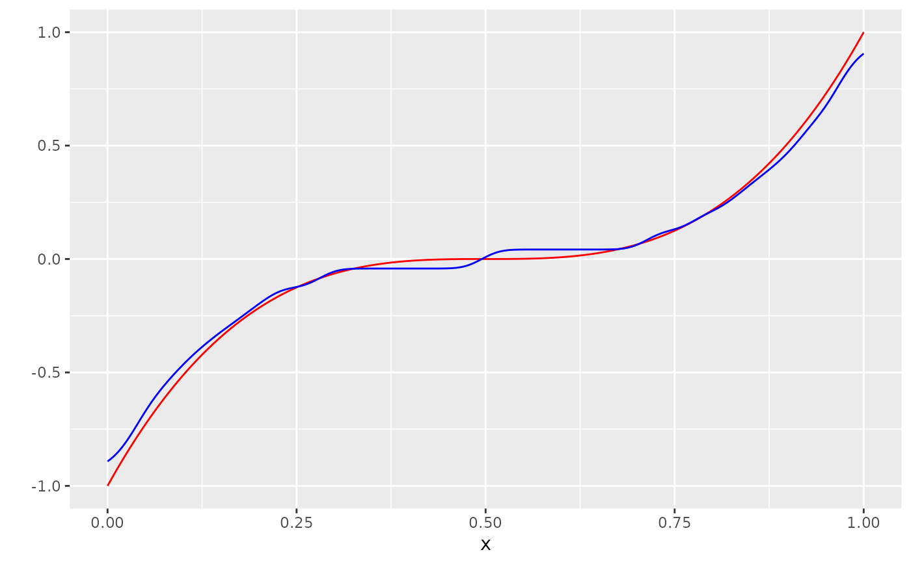

minimize_entropic_W.RdMinimize the entropic Wasserstein distance
minimize_entropic_W(
Y,
A = NULL,
AV = NULL,
P_D = NULL,
muStart = NULL,
maxIter = 100L,
minIter = 50L,
sinkhornIter = 100L,
eps = 0.01,
gammaStart = 0.05,
p = 1,
sinkhornTol = 1e-12,
gradDescTol = 1e-12,
fastSinkhorn = TRUE,
pushforwardStart = FALSE,
suppressOutput = FALSE,
WThreshold = 0
)numeric vector of observations
numeric vector of domain values where you expect most of the Y values to lie in
numeric vector of domain values which you allow the functions in the space you minimize over to take
Jacobian of mu -> W_2(mu*D, pi_hat)
starting values for minimization
maximum iteration number for gradient descent algorithm
minimum iteration number for gradient descent algorithm
maximum Sinkhorn iterations
entropic regularization constant
starting gamma value for gradient descent algorithm. Only used in first descent step.
exponent of L_p norm
tolerance for stopping criterion in Sinkhorn algorithm
tolerance for stopping criterion in gradient descent algorithm based on euclidian distance to last vector
logical, controls whether to use the fast Sinkhorn algorithm
if TRUE, starts with nearest neighbour distribution to pi_hat instead of rep(1/n)
suppress output messages?
tolerance for stopping criterion for gradient descent algorithm based on the Wasserstein distance
library(tidyverse)
#> ── Attaching packages ─────────────────────────────────────── tidyverse 1.3.1 ──
#> ✔ ggplot2 3.3.5 ✔ purrr 0.3.4
#> ✔ tibble 3.1.6 ✔ dplyr 1.0.7
#> ✔ tidyr 1.1.4 ✔ stringr 1.4.0
#> ✔ readr 2.1.1 ✔ forcats 0.5.1
#> ── Conflicts ────────────────────────────────────────── tidyverse_conflicts() ──
#> ✖ dplyr::filter() masks stats::filter()
#> ✖ dplyr::lag() masks stats::lag()
n <- 1000
x <- seq(0, 1, length.out = n)
m <- function(x) (2*(x- 0.5))^3
Y_no_error <- m(x)
varepsilon <- rbernoulli_custom(n, a= -0.3, b= 0.3, p=0.5)
Y <- (Y_no_error + varepsilon) %>% sample(n)
dat <- tibble(x=x, Y=Y, Y_no_error = Y_no_error)
N <- round(sqrt(n))
A <- seq(-1.3, 1.3, length.out = N)
stepsize <- (A[2]-A[1]) / 2
A_V <- A[which(-1 - stepsize <= A & A <= 1 + stepsize)]
p_ber <- function(x) pbernoulli_custom(x, a = -0.3, b = 0.3, p=0.5)
P <- matrix(rep(0, times = (N) * length(A_V)), nrow = N)
P[1, ] <- p_ber(A[2] - stepsize - A_V)
for (i in 2:(N-1)) {
P[i,] <- p_ber(A[i + 1] - stepsize - A_V) - p_ber(A[i] - stepsize - A_V)
}
P[N, ] <- 1 - p_ber(A[N] - stepsize - A_V)
l <-
minimize_entropic_W(Y = Y,
A = A,
AV = A_V,
P_D = P,
suppressOutput = FALSE)
#> Maximum number iterations reached (100).
mu_hat <- list()
mu_hat[["vals"]] <- l$vals
mu_hat[["probs"]] <- l$probs
g_hat <- measure_to_smooth_iso(mu_hat, n)
dat <- bind_cols(dat, g_hat = g_hat)
ggplot(dat, aes(x=x, y=Y_no_error)) +
geom_line(col="red") +
scale_y_continuous("") +
geom_line(aes(y=g_hat), col="blue")
